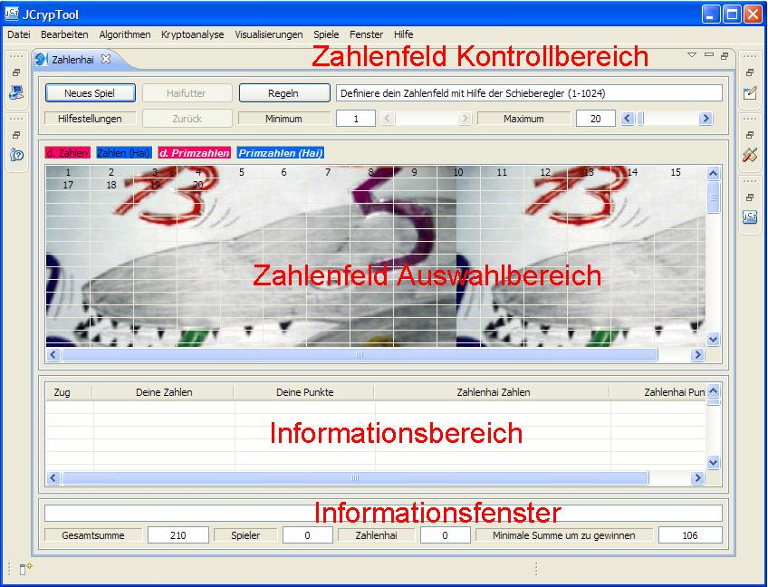
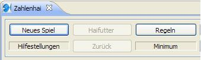
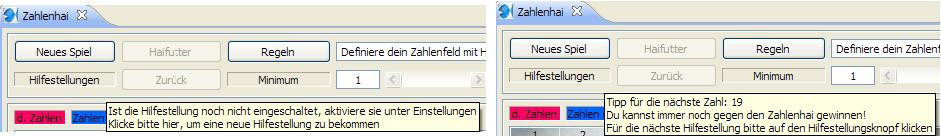
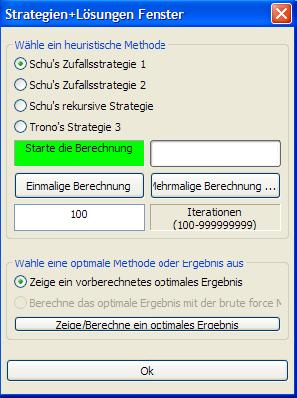
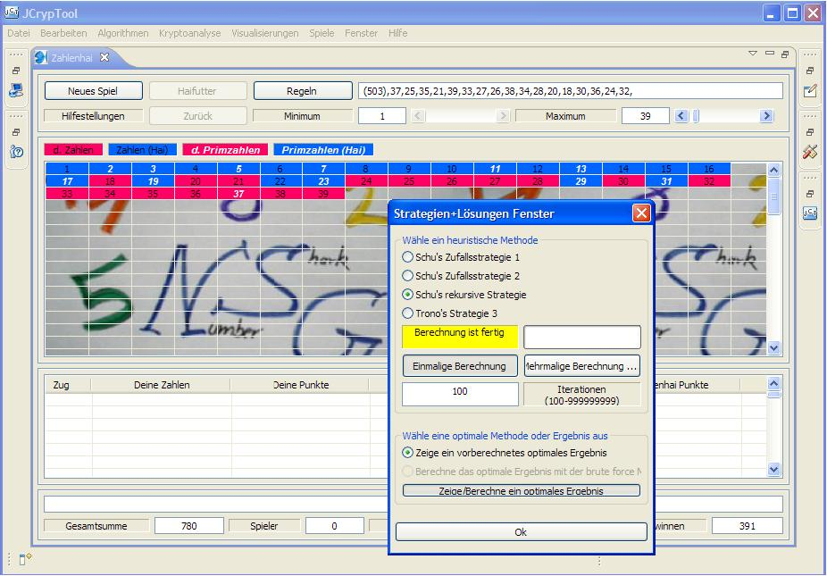

Manual
The window below shows the Number Shark main window including the number set control area,
the number set selection area, the info area and the info window. The number set control area
contains all parts to control the game. The number set selection area is your designated
area to play the game. The info area and info window provide you with additional information and
record your move course.

1. Number set control and selection area
The number set control area contains in general all parts to control the game. There are three
different parts: 1. buttons, 2. sliders, 3. text input field.
The number set selection area is the area to play the game. All areas will be explained now in more detail.
1.1 Buttons

- "New Game"
After you have selected a new number set, the button "New Game" must be pushed to start the game. Selection of a
new number set means either selecting a new number set generation mode or just changing the parameters of the already
selected mode.
- "Support"
By pushing on this button, you will get a tip as proposal for your next move. Furthermore the tool provides you
with a hint, whether you can still win or you will loose the game.
This feature is only activated for the support mode 2 and 3. These modes can be enabled by changing the parameters in the
preference page of the Number Shark.
The tip does clearly not lead you to an optimal score, but it will guide you to win in any case against the Number Shark.
Pay attention: Depending on the size of your number set, activating this feature can be very time consuming.
The figure below shows two situations, one before activating the feature (left half of the figure) and one after activating
the feature and pushing on the button (right half of the figure).

- "Eat"
Numbers without free, real divisors and without being divisors for other free numbers cannot contribute to your score
any more. The button "Eat" is activated, if such numbers occur during the game. The figure below shows an example for such
a situation. The tooltip text of the button "Eat" is shown. All numbers, which cannot contribute any more are listed.
The button "Eat" gives you the possibility to take these numbers out of the game immediately (food for the Number Shark).
It is recommended to push the button "Eat" always after it has been activated: You gain a better overview for all interesting
numbers.
But pay attention, there is no button "Undo" for this action yet.

- "Undo"
The button "Undo" allows you to revise your last selection in the number set selection area. Pay attention:
you can undo only your last selection yet.
- "HowTo"
The button "HowTo" opens a message window and enables you to look for the rules
of the game.
- "Help" (Menu - Help)
"Help" opens the context help window. From here the complete Number Shark
help can be opened.

1.1.1 Number Shark preference page
The preference page offers three different choices. At first, you select one out of three number set
generation modes. Secondly, you control, how many support you get. And finally you can change the background image
of the number set selection area. By activating the background image, the background will change randomly after pushing
the button "New Game".

At first, you can select one out of three number set generation modes.
Number set from 1 to maximum (maximum is the size of the number set)
Select your maximum size of the number set with the slider shown in the figure below. The number set in this example is
{1,...,20}. The minimum slider and the text input field are not activated in this mode. The minimum is always set to '1'.
Furthermore all support modes are enabled in this mode.

Number set from minimum to maximum (maximum - minimum + 1 is the size of the number set)
Select your size of the number set with the sliders shown in the figure below. The number set in this example
is {5,...,20}. Both sliders are activated. The tool does not allow to set the minimum slider value higher or equal
the maximum value. In this mode only the support mode without any support is allowed
(the other modes will be implemented in a future version). The text input field is not activated in this mode.

Number set defined by your numbers: n1, n2, ..., nk (k, ni is element of IN, 1<=i<=k, k is the size of the number set)
Insert your number set in the input text field below. The numbers must be separated by ",", e.g.
1,1,2,3,8,13,21. All other formats are not yet allowed and will be not accepted by the program. If the button "New Game"
is activated, the program has accepted your number set, otherwise please check (e.g. you pushed the return
button, spaces are left, etc.). As you can see in the example, also multiple of numbers are allowed.
In this mode only the support mode without any support is allowed (the other modes will be implemented in a future
version). The minimum and maximum sliders are not activated in this mode.

Secondly, you can select one out of three support modes.
Support mode 1: You play against the Number Shark without any support.
Support mode 2: Same as mode 1, but you play with guidance offered.
Support mode 3: Same as mode 1, but you will get a proposal for a solution in advance (Menu - Strategies+Solutions)
In addition to mode 2 you can calculate a move sequence with some heuristic or brute force algorithm
or you can have a look to an already calculated optimal move sequence.
This allows you to replay or study the calculated move sequence. All actions can be done via the Strategies+Solutions window
(will be explained in the next section).
And finally you can change the background image
of the number set selection area. By activating the background image, the background will change randomly after pushing
the button "New Game". One of the pictures is shown in the figure below. All pictures are drawn by my kids or by me.
1.1.2 Strategies+Solutions window

The Strategies+Solutions window offers you two choices. At first, you can select one out of four heuristic methods
to calculate possible move sequences, which may be optimal. Secondly, you have the chance to see optimal results,
which are already calculated or to calculate new optimal results by a brute force method.
The brute force method is not yet implemented in this version of the Number Shark.

The figure below explains how to open the Strategies+Solutions window.

At first, you can select one out of four heuristic methods to calculate a move sequence.
- Schu's Random Strategy 1
- Schu's Random Strategy 2
- Schu's Recursive Strategy
- Trono's Strategy 3
Background information to the strategies can be found in the chapter
Discussion of good and optimal strategies.
You can start all heuristic methods by pushing either the "Run once" or "Run for ...." button. Some of the methods need
some parameters, which will be explained below. Pay attention: Depending on the size of the number set, the run time
of the methods can be very time consuming.
The figure below shows number set selection area and the Strategies+Solutions window after finishing a run with
the button "Run for ...." and "Schu's Random Strategy 1". The yellow colour indicates, that the calculation was finished.
The calculation stops immediately, if for a defined number set size a known optimal result was reached. In this case is
N=39 and the optimal result is known. You can see the result of the operation including the move sequence, the number of
moves and the reached score in the text output window. The result can be copied for further use.
For all methods, N will be defined by the maximum slider.
The progress bar informs about the progress of the operation.
During the calculation, the red colour indicates the ongoing calculation. If the optimal result is not known or not reached by
the method, the calculation stops after the defined number of iterations. The number of iterations can be defined in the
iterations input field. The minimum number of iterations is 100. Green colour indicates readiness for starting the
calculation.

- Button "Run once"
Starts the calculation for a heuristic method. The method is calculated once. The random parameters
for "Schu's Strategy 1&2" are calculated internally and they will change with every execution.
The other methods are deterministic.
- Button "Run for ...."
Starts the calculation for a heuristic method. The method is calculated again and again depending on the value in
the iterations input field. The random parameters for "Schu's Strategy 1&2" are calculated internally and they will change
with every run. For "Schu's Recursive Strategy" and "Trono's Strategy 3", the behaviour is the same as
for the button "Run once".
- Iterations input field
Please enter here the amount of iterations for "Schu's Strategy 1&2". Pay attention, for larger number set sizes,
the calculation time can be very time consuming. "Schu's Recursive Strategy" expects an initial size of a number set and
the corresponding move sequence in the initialisation input field. Here the amount of iterations is defined by the
initial size of the number set and the maximum slider value.
- Progress window
The progress bar indicates the advance in execution.
- Initialisation input field
"Schu's Recursive Strategy" requests the size of the initial number set and the corresponding move sequence.
Both must be entered in the input field for initialisation (is identical to the result output field). The figures below
show the situation before starting "Schu's Recursive Strategy" and after finishing. Per default the initial entry
in the input field is: (8):7,8,6, which means the start size is 8 and the move sequence is 7,8,6. The size of the
number set of interest is 39.
If you start the method with this initialisation, the method is repeated, until the final size is reached. Pay attention:
If you define a wrong start size and/or a wrong move sequence, the result will be wrong. Take care, that the start size
number and the move sequence numbers are smaller than the number set size of interest. Otherwise, the program will chance your
wrong input values.
- Result output field
You find the final result of the heuristic method here. The result comprises the reached score, the amount of moves
and the move sequence. The field can be copied for further usage.

Furthermore you can either have a look to already calculated optimal move sequences (only up to 158 according to
Dan Hoey [2]) or you can calculate the optimal move sequence using a
brute force method (not yet implemented in this version). The figure below shows the result after pushing the button
"Show optimal result". In the number set selection area, the numbers are coloured according to their classification.
The text field shows an optimal move sequence including the optimal score in brackets. You can copy this information for
further usage, e.g. as input move sequence for Schu's recursive heuristic method.

1.2 Sliders and text input
The sliders Minimum and Maximum can be used to define the number set in the number set generation
mode 1 and 2, respectively. In the mode 3 the text input field must be used to define the number set. Compare also
1.1.1.

1.3 Number set selection area
The number set selection area is the designated area on which the game is played. You can click on any arbitrary number
in the area. But only if the cursor position is highlighted with a gray background colour, the number can be selected.
After selecting a number, the background will be coloured. Coloured numbers can not
be selected any more. The colours have different meanings:
Magenta with white number: Prime numbers, which contribute to your score
Magenta with black number: Composite numbers, which contribute to your score
Blue with white number: Prime numbers, which contribute to the Number Shark score
Blue with black number: Composite numbers, which contribute to the Number Shark score
The size of the number set selection area will be generated at the start up of the program.
So please use the window sliders to move around in the number set selection area,
if you cannot see all numbers at a glance. Initially the number set selection area will contain the number set {1,...,20}.
You can immediately start to play the game. At any time you can start a new game by pushing the button "New Game". In this
case, the number set selection area will be reset.

2. Info window and area
The info window and area record and/or show different information according
to your move course.

2.1 The info window
- Text overview
The text overview records your move course. The text overview can be copied for your documentation.
The two numbers in brackets show the amount of numbers of your move course and your score, respectively.
- Total count
The sum of all numbers of the number set defines the total count. It will be divided in your score and
the Number Shark score later. At the end of a game, the sum of your and the Number Shark score will be identical
to the total count.
- Player
This is your score.
- Shark
This is the Number Shark's score.
- Minimum count to win
To win your score must exceed this number. It is identical to half of the total count plus 1.
2.2 The info area
The table records for each move your selected number and your current score. Furthermore the numbers of the Number Shark
and its score are stored. The table can be used to analyse the move course
in more detail.